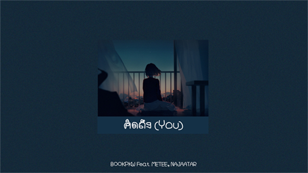
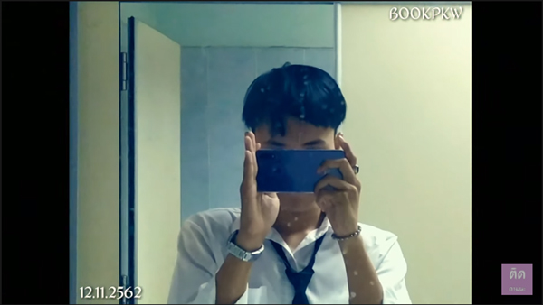
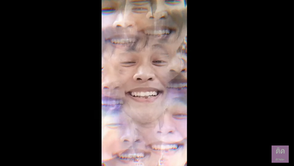

BOOKPKW - คิดถึง(You) Ft.METEEE,NAJAATAR
เป็นหนึ่งเพลงที่น่าจะถูกใจคนที่กำลังคิดถึงคนรักเก่าได้เป็นอย่างดี
รับชม

BOOKPKW - อาจจะ | MEYOU ft. ZiggaRice ( Cover ) [ Lifestyle MV ]
เป็นหนึ่งในเอ็มวีที่มีความคอมเมดี้และตลกโปกฮาเป็นอย่างมาก
รับชม

BOOKPKW - ทิ้งแต่เก็บ | The TOYS ( Cover ) [ Lifestyle MV ]
ถ้าใครได้ฟังเพลงนี้รับรองน้ำตาซึมแน่นอนครับ ซึ้งหรอ? ป่าวครับแสบแก้วหู...
รับชม